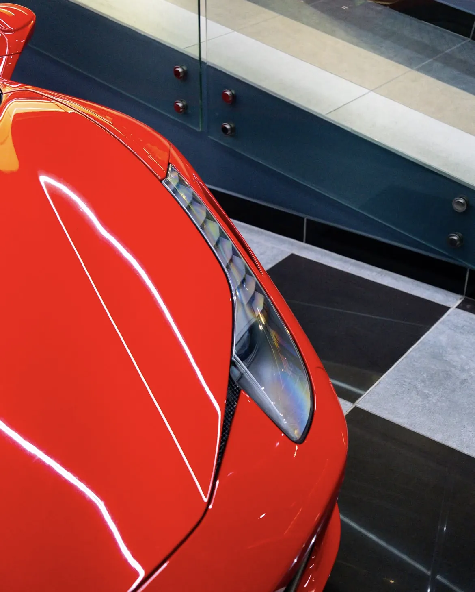
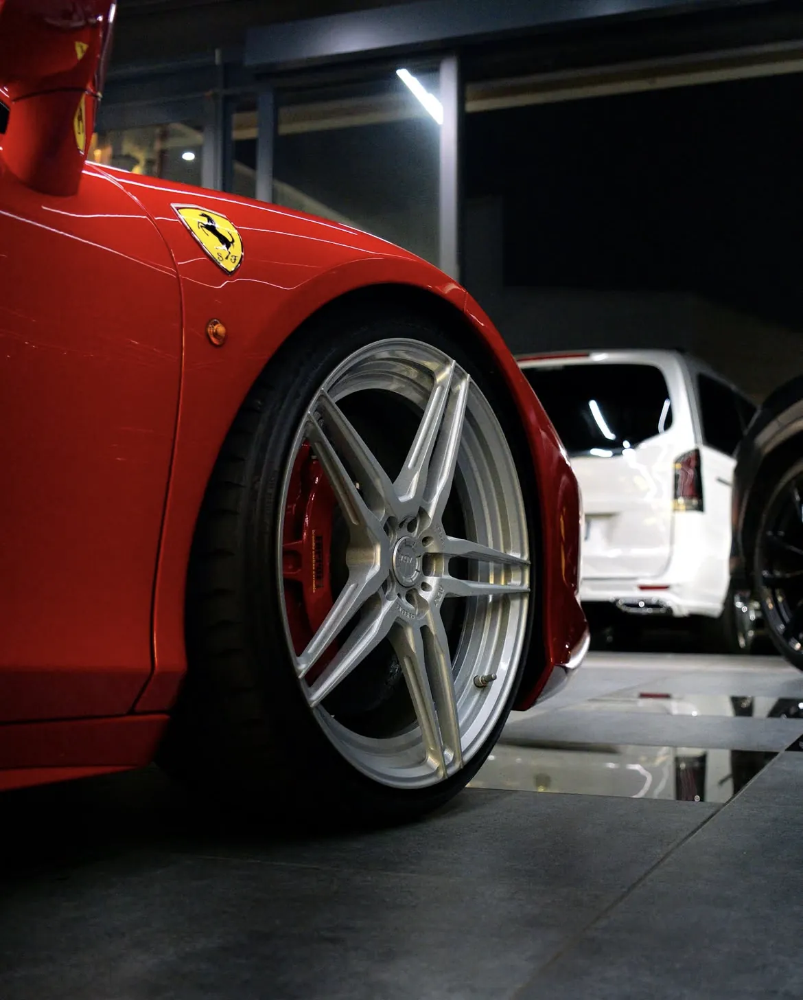
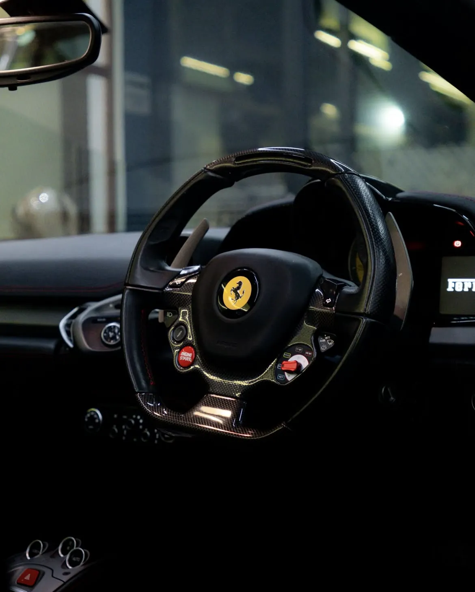
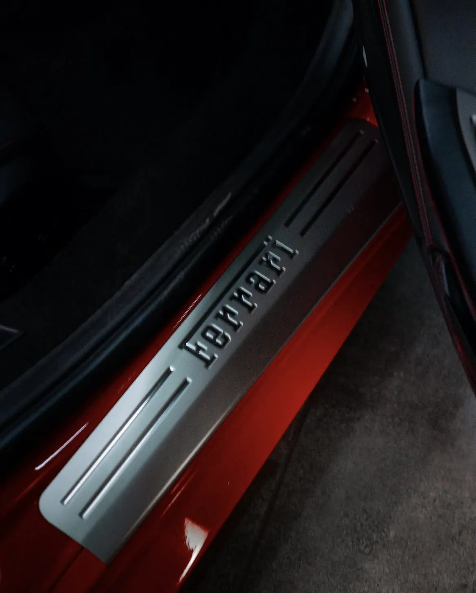
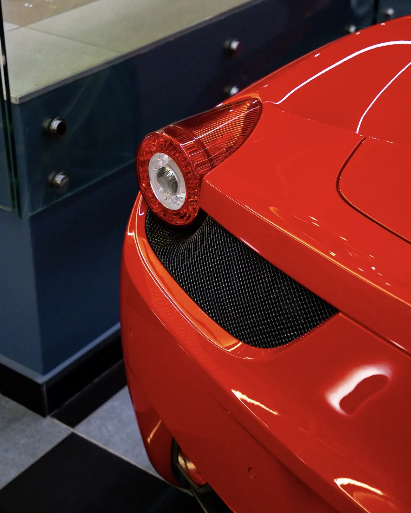

Porsche 911 GT3
A track-bred 911 with a naturally aspirated flat-six and an unmistakable rear wing.
- 4.0 L flat-six
- 510 PS
Naturally aspirated V8 theatre, with the roof folded away.

The 458 Spider pairs a high-revving, naturally aspirated V8 with a retractable aluminium hardtop, so the engine note is part of the drive.
In red with a carbon-fibre steering wheel, it is the most expressive car in the Palace garage.
Factory figures for the model. Confirm the exact year and specification of Palace’s car when you enquire.





Interested in the Ferrari 458 Spider?
Enquire About This VehicleA track-bred 911 with a naturally aspirated flat-six and an unmistakable rear wing.
A 1967 Shelby GT500 in grey with black stripes, named Eleanor after the film car.
A four-door twin-turbo straight-six with a cabin trimmed in orange leather.